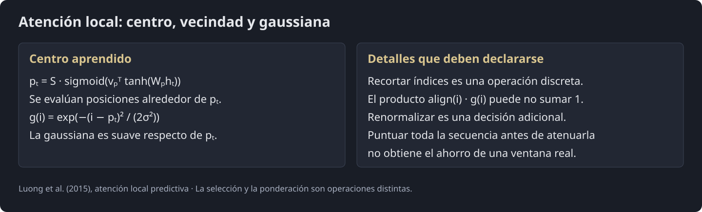
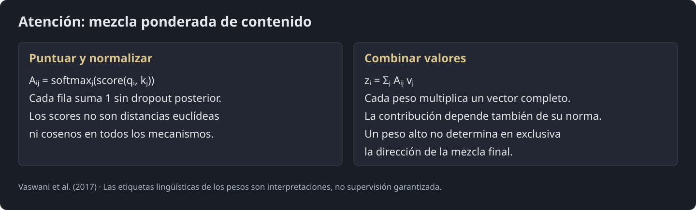
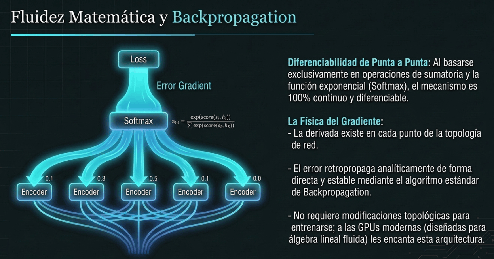
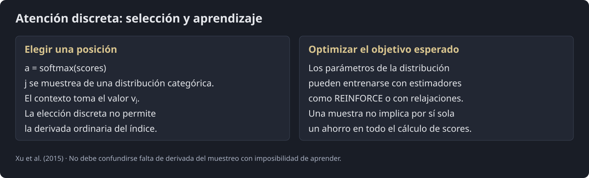
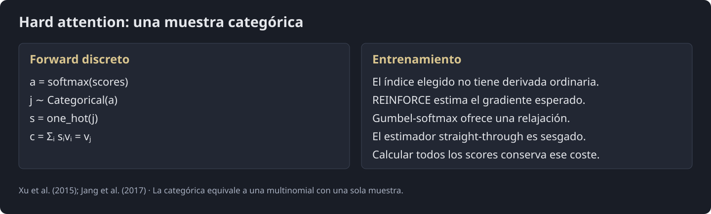
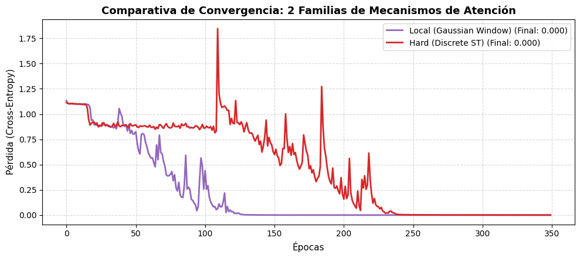
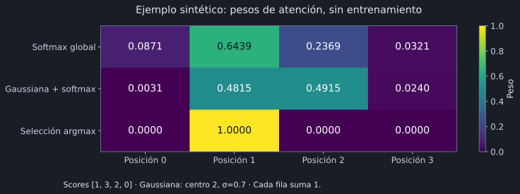
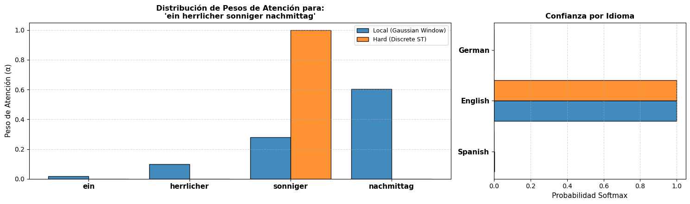

Procesamiento del Lenguaje Natural y Reconocimiento del Habla · Clase 08
6 - Mecanismos de Atención - Parte 3 (v2)
Contenido convertido sin ejecutar Python. Se conservan las salidas guardadas; las figuras matemáticas sustituidas y los gráficos de PE están identificados en el registro de revisión.
En esta página
Referencias6. Mecanismos de Atención y Arquitectura Transformer6.5. El Dilema de la Escala: Luong Global vs. Local (2015)6.5.1. La Propuesta de Atención Local / Ventana Deslizante (Local Attention)6.6. La Nitidez del Foco: Soft vs. Hard Attention (Xu et al., 2015)6.6.1. Soft Attention (Atención Suave)6.6.2. Hard Attention: El Enfoque Estocástico y de Selección6.7. Implementación con PyTorchCelda 1: Importación de librerías y configuraciónCelda 2: Preparación del archivo de texto y entrenamiento de FastText (Meta)Celda 3: Construcción del PyTorch Dataset con ft_model.get_word_vectorCelda 4.1.: Módulo de Atención ( LocalAttention )Celda 4.2.: Módulo de Atención ( HardAttention )Celda 4.3.: Módulo de Atención y LSTM( HardAttention )Celda 5: Entrenamiento de las 2 Variantes de AtenciónCelda 6: Inferencia Comparativa6. Mecanismos de Atención y Arquitectura Transformer
6.5. El Dilema de la Escala: Luong Global vs. Local (2015)
Con una fuente de longitud y una salida de longitud , la atención global puntúa aproximadamente pares (además del coste por dimensión). Se habla de crecimiento cuadrático cuando ambas longitudes aumentan juntas.
El uso de memoria depende de la implementación: un decoder recurrente puede calcular un paso cada vez sin guardar una matriz completa de todos los pares. La atención local restringe las posiciones evaluadas alrededor de un centro; su ahorro real requiere computar solo esa vecindad.
Referencia: Luong et al. (2015), sección 3

6.5.1. La Propuesta de Atención Local / Ventana Deslizante (Local Attention)
La atención local predictiva de Luong evalúa una vecindad alrededor de un centro continuo. Para un centro entero y radio D, el intervalo inclusivo contiene hasta 2D+1 posiciones, y menos junto a los extremos. El tratamiento de un centro no entero requiere declarar cómo se eligen los índices.
Referencia: Luong et al. · Atención global y local
6.5.1.1. El Algoritmo de Alineación Local
-
Predicción de la Posición Central (): El modelo proyecta el estado actual del decodificador mediante una capa lineal y una función sigmoide para predecir en qué coordenada física de la secuencia de origen (de longitud ) debe enfocarse:
donde
-
y son los parámetros del modelo los cuales serán aprendidos para predecir las posiciones;
-
es el tamaño de la oración fuente, y la función de activación sigmoide.
-
Como resultado de , .
-
En la variante predictiva local de Luong, se predice un centro y se pondera la atención con una gaussiana:
El factor gaussiano es suave respecto del centro para las posiciones evaluadas. No vuelve derivable una operación discreta de selección de índices: deben distinguirse la ponderación continua y el recorte de la ventana.
Después de multiplicar por la gaussiana, los pesos no tienen por qué sumar uno. Si el laboratorio los renormaliza, esa es una decisión adicional de implementación. Una versión que calcula todas las posiciones y solo las atenúa conserva el coste global de puntuarlas.
Referencia: Luong et al. (2015), sección 3
-
Intuición Física: A medida que una palabra de origen se aleja del centro de atención estimado , su peso decae exponencialmente debido al factor Gaussiano.
-
Al ser una función matemática continua, los gradientes pueden fluir hacia atrás para ajustar los parámetros de la proyección , permitiendo que el "ojo" de la atención aprenda a deslizarse de forma fluida a lo largo del texto.
El coeficiente o variable representa el índice de posición real del token en la secuencia del codificador (secuencia de origen).
- En la penalización Gaussiana : Mide la distancia espacial entre la posición física del token actual () y el punto focal o posición central estimada por el decodificador ().
- A medida que el índice se aleja de , la diferencia aumenta, lo que reduce exponencialmente el peso de atención de ese token particular dentro de la ventana de contexto.
¿Por qué la función Exponencial ()?
-
Garantizar no-negatividad: Las probabilidades y factores de escala en atención deben ser estrictamente positivos (). La función exponencial asegura que cualquier valor resultante se mantenga positivo en todo el dominio.
-
Decaimiento asintótico: La exponencial hace que el decaimiento de la atención sea rápido y fluido a medida que nos alejamos del centro, tendiendo suavemente a hacia los extremos sin cortes bruscos.
¿Por qué el signo Negativo ()?
-
Penalización por distancia: La distancia cuadrática es un valor positivo que crece conforme el índice se aleja de .
-
Con el signo negativo:
-
Cuando (coincidencia perfecta), el exponente es , resultando en (máxima ponderación, no hay penalización).
-
Cuando (el token está lejos), el numerador es positivo pero el signo lo vuelve negativo grande, lo que produce (penalización exponencial por lejanía espacial).
-
6.6. La Nitidez del Foco: Soft vs. Hard Attention (Xu et al., 2015)
Casi en paralelo a los avances en traducción, el campo de la Visión por Computadora adoptó la atención para la generación de descripciones de imágenes (Image Captioning). En el artículo clásico "Show, Attend and Tell" (Xu et al., 2015), los autores introdujeron una división conceptual fundamental: Atención Soft (Suave) frente a Atención Hard (Dura).
ATENCIÓN SOFT (Determinista y Difusa):
El modelo toma una "burbuja" de atención amplia, sumando un porcentaje de cada zona de la imagen.
Fórmula: c_t = \sum_i \alpha_{t,i} h_i | Totalmente diferenciable por Backpropagation.
ATENCIÓN HARD (Estocástica y Láser):
El modelo toma una decisión categórica: mira un único punto físico e ignora el resto.
Fórmula: c_t = h_{i_{sampled}} | No derivable. Requiere Aprendizaje por Refuerzo (REINFORCE).
6.6.1. Soft Attention (Atención Suave)
Es la atención tradicional basada en la función Softmax. El vector de contexto es una suma ponderada continua de todos los estados del codificador. Es completamente determinista y derivable de punta a punta, lo que facilita su entrenamiento mediante descenso de gradiente convencional.
SOFT ATTENTION (Suave)
Entradas (Patches/Tokens): [ h_1 ] [ h_2 ] [ h_3 ] [ h_4 ]
│ │ │ │
Pesos de Atención (α_i): 0.15 0.60 0.05 0.20 (Suma = 1)
╲ │ ╱ ╱
Promedio Ponderado: ▼ ▼ ▼ ▼
Vector de Contexto (c_t): [ 0.15*h_1 + 0.60*h_2 + 0.05*h_3 + 0.20*h_4 ]

6.6.1.1. Formulación Matemática
Supongamos que tenemos vectores de características de entrada (pueden ser estados ocultos de una RNN o parches espaciales de una imagen procesados por una CNN). Para un paso de decodificación , calculamos las puntuaciones de energía de alineación mediante una función de afinidad semántica:
A partir de estas energías, aplicamos la función Softmax para obtener la distribución de probabilidad de atención , garantizando que todos los pesos sean positivos y sumen exactamente :
6.6.1.2. La Física del Gradiente y la Diferenciabilidad
Escribimos y . Tratando los scores y valores como variables independientes, y . Si una entrada también genera claves o scores, su derivada total contiene esas rutas adicionales. La diferenciabilidad no garantiza estabilidad ni convergencia.
Referencia: Vaswani et al. · Attention Is All You Need

6.6.1.3. Ventajas y Desventajas
-
Pros:
-
Diferenciabilidad innata: Se entrena de forma extremadamente estable y fluida utilizando backpropagation ordinario.
-
Simplicidad de optimización: Se acopla de manera limpia a cualquier arquitectura profunda sin trucos ni estimadores de varianza.
-
-
Contras:
-
Alto costo computacional: Si el volumen de la entrada es masivo (por ejemplo, imágenes gigantescas o textos clínicos de miles de páginas), el modelo está obligado a calcular pesos y promediar absolutamente todos los elementos en cada iteración, lo que escala con coste lineal por consulta; para N consultas.
-
Difusión semántica: Al calcular un promedio continuo, el foco resultante puede volverse "difuso", emborronando detalles específicos al intentar reconciliar semánticamente demasiadas posiciones a la vez.
-
6.6.2. Hard Attention: El Enfoque Estocástico y de Selección
A diferencia de la atención suave, la Atención Hard (o dura) concibe el foco como una decisión categórica estricta: en lugar de promediar todos los parches o palabras de forma difusa, el modelo debe elegir una única región o token en cada paso de tiempo, ignorando completamente el resto del espacio.
HARD ATTENTION (Dura)
Entradas (Patches/Tokens): [ h_1 ] [ h_2 ] [ h_3 ] [ h_4 ]
│ │ │ │
Pesos de Atención (α_i): 0.15 0.60 0.05 0.20 (Probabilidades)
│ │ │ │
Muestreo Estocástico: [ ] [ SELECCIONADO ] [ ] [ ] (Elección Binaria)
│
Vector de Contexto (c_t): [ h_2 ]

6.6.2.1. Formulación Matemática
En atención discreta, y . Si se representa la elección como one-hot, corresponde a una multinomial con un ensayo. Seleccionar un índice corta la ruta ordinaria del gradiente hacia sus probabilidades; la esperanza del objetivo puede entrenarse con estimadores como REINFORCE o con relajaciones.
Referencia: Xu et al. · Show, Attend and Tell
6.6.2.2. El Muro de la No-Diferenciabilidad
La operación de muestreo discreto () introduce una discontinuidad fundamental en el flujo de cómputo. No existe una función matemática derivable continua que traslade la probabilidad de entrada a la decisión entera de selección o .
Si intentamos aplicar la regla de la cadena para fluir los gradientes del error hacia atrás, nos topamos con un "muro": el gradiente del muestreo respecto a sus parámetros de distribución es cero en casi todos los puntos o indefinido. La retropropagación estándar falla catastróficamente.

6.6.2.3. La Solución por Aprendizaje por Refuerzo: El Algoritmo REINFORCE
Xu et al. optimizan una cota variacional de la log-verosimilitud con muestreo de localizaciones y un estimador de tipo REINFORCE. No debe atribuirse a ese experimento una recompensa BLEU o +1 inventada. Para una recompensa independiente de los parámetros, . Si R también depende de parámetros, se añade su derivada directa. Una baseline independiente de la acción puede reducir varianza.
Referencia: Xu et al. · Show, Attend and Tell
Xu et al. optimizan una cota variacional de la log-verosimilitud con muestreo de localizaciones y un estimador de tipo REINFORCE. No debe atribuirse a ese experimento una recompensa BLEU o +1 inventada. Para una recompensa independiente de los parámetros, . Si R también depende de parámetros, se añade su derivada directa. Una baseline independiente de la acción puede reducir varianza.
Referencia: Xu et al. · Show, Attend and Tell
6.7. Implementación con PyTorch
Celda 1: Importación de librerías y configuración
Configura el entorno de trabajo, define la semilla de reproducibilidad y selecciona el dispositivo de cómputo (CPU o GPU).
Código Python · celda 48
!pip install -q fasttext-wheel
Código Python · celda 49
import re
import fasttext
import matplotlib.pyplot as plt
import numpy as np
import seaborn as sns
import torch
import torch.nn as nn
import torch.nn.functional as F
from torch.utils.data import DataLoader, Dataset
# Configuración de reproducibilidad
torch.manual_seed(42)
np.random.seed(42)
if torch.cuda.is_available():
torch.cuda.manual_seed_all(42)
# Configuración del dispositivo de cómputo
device = torch.device("cuda" if torch.cuda.is_available() else "cpu")
print(f"Entorno configurado. Dispositivo de ejecución: {device}")
Entorno configurado. Dispositivo de ejecución: cpu
Celda 2: Preparación del archivo de texto y entrenamiento de FastText (Meta)
El motor en C++ de FastText procesa directamente archivos de texto plano línea por línea. Creamos el archivo de entrenamiento train_corpus.txt y entrenamos un modelo de subpalabras no supervisado con Skip-gram.
fasttext.train_unsupervised compila el diccionario de palabras y la tabla hash de subpalabras (-gramas de caracteres definidos entre
minnymaxn). Cualquier palabra desconocida que consulte get_word_vector() construirá su vector sumando los vectores de sus subfragmentos.
Código Python · celda 51
# Dataset de entrenamiento clasificado por idioma
corpus_data = {
"Spanish": [
"hola como estas mi querido amigo",
"el perro corre en el parque verde",
"la casa grande tiene ventanas abiertas",
"vamos a comer comida deliciosa hoy",
"la musica suena muy bien en la fiesta",
"el tiempo vuela cuando estamos juntos",
"el sol brilla fuerte en la playa",
"el trabajo en la ciudad es agotador"
],
"English": [
"hello how are you my dear friend",
"the dog runs in the green park",
"the big house has open windows",
"we are going to eat delicious food today",
"the music sounds great at the party",
"time flies when we are together",
"the sun shines bright on the beach",
"working in the city is very tiring"
],
"German": [
"hallo wie geht es dir mein freund",
"der hund laeuft in dem gruenen park",
"das grosse haus hat offene fenster",
"wir werden heute leckeres essen geniessen",
"die musik klingt toll auf der feier",
"die zeit vergeht schnell wenn wir zusammen sind",
"die sonne scheint hell am strand",
"die arbeit in der stadt ist sehr anstrengend"
]
}
# 1. Escritura del corpus en un archivo de texto plano para la API de Meta
corpus_filename = "train_corpus.txt"
with open(corpus_filename, "w", encoding="utf-8") as f:
for sentences in corpus_data.values():
for sentence in sentences:
f.write(sentence.lower() + "\n")
# 2. Entrenamiento del modelo oficial de FastText
embedding_dim = 32
ft_model = fasttext.train_unsupervised(
input=corpus_filename,
model="skipgram",
dim=embedding_dim,
minn=2, # Tamaño mínimo de n-gramas de caracteres
maxn=4, # Tamaño máximo de n-gramas de caracteres
epoch=100,
lr=0.1,
thread=2
)
# 3. Mapeo de categorías a identificadores numéricos
categories = list(corpus_data.keys())
category_to_idx = {cat: idx for idx, cat in enumerate(categories)}
idx_to_category = {idx: cat for cat, idx in category_to_idx.items()}
# Prueba de inferencia de subpalabras (palabra fuera de vocabulario)
oov_vector = ft_model.get_word_vector("amiguito")
print(f"Modelo FastText entrenado.")
print(f"Forma del vector generado para 'amiguito' (OOV): {oov_vector.shape}")
Modelo FastText entrenado. Forma del vector generado para 'amiguito' (OOV): (32,)
Celda 3: Construcción del PyTorch Dataset con ft_model.get_word_vector
Tokeniza las oraciones y extrae directamente los vectores densos calculados por el motor de
FastText, aplicandozero-paddingpara homogeneizar la longitud temporal de las secuencias.
Código Python · celda 53
def simple_tokenize(text):
"""
Limpia y divide una cadena de texto en una lista de palabras en minúsculas.
Parámetros:
-----------
text : str
Texto de entrada.
Retorna:
--------
list of str
Lista de tokens limpios.
"""
return re.findall(r"\b\w+\b", text.lower())
class MetaFastTextDataset(Dataset):
"""
Dataset que transforma oraciones en matrices temporales de tensores continuos
utilizando el método get_word_vector de la librería oficial de FastText.
Atributos:
----------
samples : list of tuple (list of str, int)
Pares de (lista_de_tokens, etiqueta_de_idioma).
ft_model : fasttext.FastText._FastText
Modelo binario entrenado de FastText de Meta.
embedding_dim : int
Dimensión de cada vector de palabra.
max_len : int
Longitud máxima de secuencia para aplicar padding.
"""
def __init__(self, data_dict, ft_model, category_to_idx):
"""
Inicializa el dataset procesando las oraciones y extrayendo su longitud máxima.
"""
self.ft_model = ft_model
self.embedding_dim = ft_model.get_dimension()
self.samples = []
for category, sentences in data_dict.items():
label = category_to_idx[category]
for sentence in sentences:
tokens = simple_tokenize(sentence)
self.samples.append((tokens, label))
self.max_len = max(len(tokens) for tokens, _ in self.samples)
def __len__(self):
"""Retorna el número total de oraciones."""
return len(self.samples)
def __getitem__(self, idx):
"""
Genera el tensor temporal (seq_len, embedding_dim) con padding de ceros.
Retorna:
--------
tuple (torch.Tensor, torch.Tensor)
- sequence_tensor: Matriz de float32 con forma (max_len, embedding_dim).
- label_tensor: Escalar con el índice del idioma.
"""
tokens, label = self.samples[idx]
# Obtención directa del vector por cada token mediante FastText
word_vectors = [self.ft_model.get_word_vector(token) for token in tokens]
# Padding con ceros hasta alcanzar max_len
pad_size = self.max_len - len(word_vectors)
for _ in range(pad_size):
word_vectors.append(np.zeros(self.embedding_dim, dtype=np.float32))
sequence_tensor = torch.tensor(np.array(word_vectors), dtype=torch.float32)
label_tensor = torch.tensor(label, dtype=torch.long)
return sequence_tensor, label_tensor
# Creación de DataLoader
dataset = MetaFastTextDataset(corpus_data, ft_model, category_to_idx)
train_loader = DataLoader(dataset, batch_size=4, shuffle=True)
sample_x, sample_y = dataset[0]
print(f"Dimensiones de entrada por oración: {sample_x.shape} (pasos temporales, dimensión FastText)")
print(f"Etiqueta de clase: {sample_y.item()} -> {idx_to_category[sample_y.item()]}")
Dimensiones de entrada por oración: torch.Size([8, 32]) (pasos temporales, dimensión FastText) Etiqueta de clase: 0 -> Spanish
Celda 4.1.: Módulo de Atención (LocalAttention)
Código Python · celda 55
class LocalAttention(nn.Module):
"""Mecanismo de Atención Local con Alineación Predictiva y Ventana Gaussiana
(variante didáctica inspirada en Luong et al., 2015).
Estima una posición central p_t en la secuencia y atenúa suavemente los
pesos fuera de una ventana de radio D mediante una distribución normal.
Atributos:
----------
window_size : int
Radio D de la ventana de contexto local alrededor de p_t.
linear : nn.Linear
Matriz de proyección bilineal para las claves.
wp : nn.Linear
Capa densa que proyecta la consulta para predecir la posición central.
vp : nn.Linear
Vector de contracción a escalar para la posición relativa.
"""
def __init__(self, query_dim, key_dim, window_size=2):
"""Inicializa los parámetros de alineación y proyección de posición."""
super(LocalAttention, self).__init__()
self.window_size = window_size
self.linear = nn.Linear(key_dim, query_dim, bias=False)
self.wp = nn.Linear(query_dim, query_dim, bias=False)
self.vp = nn.Linear(query_dim, 1, bias=False)
def forward(self, query, keys, mask=None):
"""Calcula los pesos atencionales focalizados por una ventana
gaussiana.
Parámetros:
-----------
query : torch.Tensor
Vector de consulta con forma (batch_size, query_dim).
keys : torch.Tensor
Estados temporales con forma (batch_size, seq_len, key_dim).
mask : torch.Tensor, opcional
Máscara de padding con forma (batch_size, seq_len).
Retorna:
--------
tuple (torch.Tensor, torch.Tensor)
- context_vector: Suma ponderada con forma (batch_size, key_dim).
- attention_weights: Distribución acotada con forma (batch_size,
seq_len).
"""
batch_size, seq_len, _ = keys.size()
# 1. Puntuación multiplicativa base
projected_keys = self.linear(keys)
scores = torch.bmm(
projected_keys, query.unsqueeze(2)
).squeeze(2)
# Atenuación gaussiana global: variante suave con coste O(seq_len).
valid = (torch.ones(keys.shape[:2], dtype=torch.bool, device=keys.device)
if mask is None else mask.to(device=keys.device, dtype=torch.bool))
if valid.shape != keys.shape[:2] or not valid.any(dim=-1).all():
raise ValueError("Cada secuencia debe tener al menos una clave válida")
lengths = valid.sum(dim=-1).to(keys.dtype)
p_t = (lengths - 1) * torch.sigmoid(self.vp(torch.tanh(self.wp(query)))).squeeze(-1)
positions = torch.arange(seq_len, device=keys.device, dtype=keys.dtype)[None, :]
sigma = max(self.window_size / 2.0, 1e-4)
log_gaussian = -(positions - p_t[:, None]).square() / (2 * sigma**2)
logits = (scores + log_gaussian).masked_fill(~valid, float("-inf"))
attention_weights = F.softmax(logits, dim=-1)
context_vector = torch.bmm(
attention_weights.unsqueeze(1), keys
).squeeze(1)
return context_vector, attention_weights
1. Ecuaciones del Modelo
-
Puntuación de Afinidad Base (): Calcula la alineación multiplicativa (general) entre la consulta y los estados de la secuencia:
-
Predicción Continua de la Posición Central (): El modelo aprende a proyectar el foco central en función del estado de consulta actual mediante una pequeña red feed-forward acotada por una función sigmoide ():
Donde es la longitud total de la secuencia (
seq_len), y son parámetros aprendibles. -
Atenuación Gaussiana Suave: Para que la posición sea derivable y optimizable mediante retropropagación, no se aplica una máscara de corte rígido, sino una campana de Gauss centrada en con desviación :
Donde representa el índice de posición real del token en la secuencia.
-
Modulación y Renormalización de Pesos:
-
Vector de Contexto Local ():
2. Desglose del Constructor (__init__)
class LocalAttention(nn.Module):
def __init__(self, query_dim, key_dim, window_size=2):
super(LocalAttention, self).__init__()
self.window_size = window_size
self.linear = nn.Linear(key_dim, query_dim, bias=False)
self.wp = nn.Linear(query_dim, query_dim, bias=False)
self.vp = nn.Linear(query_dim, 1, bias=False)
-
self.window_size(): Radio de la ventana local de atención (por defecto , cubriendo un span efectivo de tokens). -
self.linear(): Matriz de proyección bilineal que alinea las dimensiones de las claves con las de la consulta para el cálculo multiplicativo del score. -
self.wp(): Capa densa que transforma la consulta hacia un espacio latente para evaluar qué parte de la secuencia debe ser el centro del foco. -
self.vp(): Vector que contrae el estado latente a un único escalar antes de pasarlo por la función sigmoide.
3. Desglose del Método forward: Flujo y Transformación de Tensores
Parámetros dimensionales:
-
(
batch_size): Tamaño del lote (ej. ). -
(
seq_len): Longitud de la secuencia (ej. ). -
(
query_dim): Dimensión de la consulta (ej. ). -
(
key_dim): Dimensión de las claves (ej. ).
def forward(self, query, keys, mask=None):
batch_size, seq_len, _ = keys.size()
Paso 1: Puntuación Multiplicativa Base
# keys: [B, T, D_k] -> projected_keys: [B, T, D_q]
projected_keys = self.linear(keys)
# [B, T, D_q] x [B, D_q, 1] -> [B, T, 1] -> squeeze(2) -> [B, T]
scores = torch.bmm(projected_keys, query.unsqueeze(2)).squeeze(2)
- Multiplica las claves por la matriz aprendible y luego ejecuta el producto matricial por lotes contra la consulta (
torch.bmm), calculando los scores en paralelo para toda la secuencia.
Paso 2: Estimación de la Posición Focal Continua ()
# query: [B, D_q] -> self.wp(query): [B, D_q] -> self.vp(...): [B, 1]
# p_t: [B]
p_t = seq_len * torch.sigmoid(
self.vp(torch.tanh(self.wp(query)))
).squeeze(1)
-
torch.tanh(self.wp(query)): Genera una activación no lineal centrada en a partir de la consulta. -
self.vp(...): Reduce la dimensión a un escalar por oración . -
torch.sigmoid(...): Acota el valor en el intervalo abierto . -
seq_len * ...: Escala el valor al rango continuo .- Si , puede valer , indicando que el modelo decide enfocar su atención alrededor del token .
Paso 3: Factor de Ponderación Gaussiano
sigma = max(self.window_size / 2.0, 1e-4)
positions = torch.arange(
seq_len, device=keys.device, dtype=torch.float32
).unsqueeze(0) # [1, T]
distance_sq = (
positions - p_t.unsqueeze(1)
) ** 2 # [1, T] - [B, 1] -> [B, T] (Broadcasting)
gaussian_factor = torch.exp(-distance_sq / (2.0 * (sigma**2))) # [B, T]
-
positions: Tensor que representa los índices reales de cada palabra. -
distance_sq: Calcula por broadcasting la distancia cuadrática entre cada posición física y la posición estimada. -
torch.exp(...): Genera una campana de Gauss que vale cuando y decae asintóticamente hacia a medida que aumenta.
Paso 4: Enmascaramiento, Modulación y Renormalización
El ejemplo calcula scores para todas las posiciones y aplica una gaussiana suave, de modo que conserva coste global. Para pesos normalizados y estabilidad numérica se puede sumar el logaritmo de la gaussiana a los logits y aplicar un único softmax en posiciones válidas. Añadir epsilon a un denominador arbitrario hace que la suma no sea exactamente uno. Una secuencia vacía requiere tratamiento explícito.
Referencia: Luong et al. · Atención global y local
Paso 5: Generación del Vector de Contexto
# [B, 1, T] x [B, T, D_k] -> [B, 1, D_k] -> squeeze(1) -> [B, D_k]
context_vector = torch.bmm(attention_weights.unsqueeze(1), keys).squeeze(1)
- Realiza la combinación lineal de los estados concentrada en el vecindario local definido por .
query [B, D_q] ────────► [wp] ──► [tanh] ──► [vp] ──► [sigmoid] ──► (* seq_len) ──► p_t [B, 1]
│
positions [1, T] ──────────────────────────────────────────────────────────────────────┴──► distance_sq = (pos - p_t)² [B, T]
│
▼
gaussian_factor [B, T]
│
keys [B, T, D_k] ─────► [linear] ──► [B, T, D_q] ──┐ │
├──► [torch.bmm] ──► scores [B, T] │
query [B, D_q] ─────► unsqueeze(2) [B, D_q, 1] ───┘ │ │
▼ │
[F.softmax] │
│ │
▼ ▼
soft_weights [B, T] ──► (*) Element-wise
│
▼
raw_weights [B, T]
│
▼
[Renormalización]
│
▼
attention_weights [B, T]
│
keys [B, T, D_k] ──────────────────────────────────────────────────────────────────────────────────┴──► [torch.bmm] ──► context_vector [B, D_k]
Celda 4.2.: Módulo de Atención (HardAttention)
Código Python · celda 66
class HardAttention(nn.Module):
"""Mecanismo de Atención Dura / Estocástica (Xu et al., 2015).
Realiza una selección discreta (one-hot) de un único token en lugar de un
promedio blando. Durante el entrenamiento utiliza la relajación
Gumbel-Softmax con Straight-Through Estimator (ST) para permitir el flujo
analítico de gradientes.
Atributos:
----------
linear : nn.Linear
Proyección lineal bilineal para calcular afinidades.
temperature : float
Temperatura de relajación para el muestreo de Gumbel.
"""
def __init__(self, query_dim, key_dim, temperature=1.0):
"""Inicializa la capa de atención discreta."""
super(HardAttention, self).__init__()
self.linear = nn.Linear(key_dim, query_dim, bias=False)
self.temperature = temperature
def forward(self, query, keys, mask=None):
"""Genera una máscara discreta one-hot sobre un único paso temporal.
Parámetros:
-----------
query : torch.Tensor
Vector de consulta con forma (batch_size, query_dim).
keys : torch.Tensor
Estados temporales con forma (batch_size, seq_len, key_dim).
mask : torch.Tensor, opcional
Máscara de padding con forma (batch_size, seq_len).
Retorna:
--------
tuple (torch.Tensor, torch.Tensor)
- context_vector: Estado exacto del token seleccionado (batch_size,
key_dim).
- attention_weights: Tensor binario one-hot con forma (batch_size,
seq_len).
"""
projected_keys = self.linear(keys)
scores = torch.bmm(
projected_keys, query.unsqueeze(2)
).squeeze(2)
if mask is not None:
mask = mask.to(device=keys.device, dtype=torch.bool)
if mask.shape != keys.shape[:2] or not mask.any(dim=-1).all():
raise ValueError("Cada secuencia debe tener al menos una clave válida")
scores = scores.masked_fill(~mask, float("-inf"))
if self.training:
# Gumbel-Softmax Straight-Through: discreto en forward, continuo en backward
attention_weights = F.gumbel_softmax(
scores, tau=self.temperature, hard=True, dim=-1
)
else:
# En inferencia: selección categórica estricta mediante argmax
chosen_indices = torch.argmax(scores, dim=-1)
attention_weights = F.one_hot(
chosen_indices, num_classes=keys.size(1)
).float()
context_vector = torch.bmm(
attention_weights.unsqueeze(1), keys
).squeeze(1)
return context_vector, attention_weights
1. Desglose del Constructor (__init__)
La proyección bilineal genera los scores. Con gumbel_softmax(..., hard=True), el forward es one-hot y la temperatura cambia la relajación usada para el backward; no vuelve uniforme el one-hot del forward. El estimador straight-through es sesgado y no es la derivada exacta de una elección discreta.
Referencia: PyTorch · Gumbel-softmax
2. Desglose del Método forward: Flujo y Dimensiones de Tensores
Parámetros dimensionales:
-
(
batch_size): Tamaño del lote (ej. ). -
(
seq_len): Longitud temporal de la secuencia (ej. ). -
(
query_dim): Dimensión del estado de consulta (ej. ). -
(
key_dim): Dimensión de los estados de la secuencia (ej. ).
def forward(self, query, keys, mask=None):
Paso 1: Puntuación de Afinidad Base
# keys: [B, T, D_k] -> projected_keys: [B, T, D_q]
projected_keys = self.linear(keys)
# [B, T, D_q] x [B, D_q, 1] -> [B, T, 1] -> squeeze(2) -> [B, T]
scores = torch.bmm(projected_keys, query.unsqueeze(2)).squeeze(2)
- Aplica la proyección lineal bilineal a los estados de la secuencia y calcula los productos escalares con la consulta mediante
torch.bmm.
Paso 2: Enmascaramiento de Posiciones de Padding
if mask is not None:
scores = scores.masked_fill(mask == 0, -1e9)
- Asigna a los tokens de padding para impedir que sean seleccionados por el operador o por el muestreador estocástico.
Paso 3: Selección de Foco (Entrenamiento vs. Inferencia)
Durante entrenamiento, Gumbel-softmax con hard=True devuelve una selección discreta y usa el gradiente de una relajación para actualizar parámetros. En evaluación el código elige argmax sin ruido. Es una adaptación didáctica distinta del entrenamiento REINFORCE de Xu et al.; no deben presentarse como el mismo algoritmo.
Referencia: PyTorch · Gumbel-softmax
Paso 4: Extracción del Vector de Contexto
# [B, 1, T] x [B, T, D_k] -> [B, 1, D_k] -> squeeze(1) -> [B, D_k]
context_vector = torch.bmm(attention_weights.unsqueeze(1), keys).squeeze(1)
-
Dado que
attention_weightscontiene un en la posición seleccionada y en todas las demás, la multiplicación matricial por lotes extrae de manera exacta el vector correspondiente: -
Se elimina la dimensión unitaria intermedia con
.squeeze(1)devolviendo un tensor con forma .
keys [B, T, D_k] ─────► [self.linear] ──► projected_keys [B, T, D_q] ──┐
├──► [torch.bmm] ──► scores [B, T]
query [B, D_q] ─────► unsqueeze(2) ──► [B, D_q, 1] ───────────────────┘ │
▼
[masked_fill (-1e9)]
│
┌──────────────────────────────────────────────────────┴──────────────────────────────────────────────────────┐
▼ (self.training == True) ▼ (self.training == False)
[ F.gumbel_softmax(hard=True) ] [ torch.argmax + F.one_hot ]
│ │
└──────────────────────────────────────────────────────┬──────────────────────────────────────────────────────┘
▼
attention_weights (One-Hot) [B, T] ──► unsqueeze(1) [B, 1, T] ──┐
├──► [torch.bmm] ──► squeeze(1) ──► context_vector [B, D_k]
keys [B, T, D_k] ───────────────────────────────────────────────┘
Celda 4.3.: Módulo de Atención y LSTM(HardAttention)
Código Python · celda 75
class AttentionLSTMClassifier(nn.Module):
"""Clasificador recurrente con soporte modular para 2 tipos de atención."""
def __init__(
self,
input_size,
hidden_size,
output_size,
attention_type="bahdanau",
attention_dim=32,
window_size=2,
):
super(AttentionLSTMClassifier, self).__init__()
self.hidden_size = hidden_size
self.lstm = nn.LSTM(
input_size=input_size, hidden_size=hidden_size, batch_first=True
)
if attention_type == "local":
self.attention = LocalAttention(
hidden_size, hidden_size, window_size=window_size
)
elif attention_type == "hard":
self.attention = HardAttention(hidden_size, hidden_size)
else:
raise ValueError(f"Tipo no soportado: {attention_type}")
self.fc_combine = nn.Linear(hidden_size * 2, hidden_size)
self.classifier = nn.Linear(hidden_size, output_size)
def forward(self, x, mask=None):
lstm_out, (h_n, _) = self.lstm(x)
# LSTM unidireccional con padding a la derecha: consultar el último token válido.
if mask is None:
last_hidden = h_n.squeeze(0)
else:
valid = mask.to(device=x.device, dtype=torch.bool)
lengths = valid.sum(dim=1)
expected = torch.arange(x.size(1), device=x.device)[None, :] < lengths[:, None]
if not lengths.gt(0).all() or not torch.equal(valid, expected):
raise ValueError("Se requiere padding a la derecha y secuencias no vacías")
last_hidden = lstm_out[torch.arange(x.size(0), device=x.device), lengths - 1]
context_vector, attention_weights = self.attention(
last_hidden, lstm_out, mask=mask
)
combined = torch.tanh(
self.fc_combine(torch.cat((last_hidden, context_vector), dim=1))
)
logits = self.classifier(combined)
return logits, attention_weights
print("Módulos de Atención (Local, Hard) definidos.")
Celda 5: Entrenamiento de las 2 Variantes de Atención
Código Python · celda 77
# ==============================================================================
# CELDA 5: Entrenamiento Comparativo de los 2 Modelos de Atención
# ==============================================================================
def train_single_model(
model, train_loader, epochs=350, learning_rate=0.005, device=device
):
"""Entrena una variante de atención y almacena el registro de pérdida."""
criterion = nn.CrossEntropyLoss()
optimizer = torch.optim.Adam(model.parameters(), lr=learning_rate)
loss_history = []
for epoch in range(1, epochs + 1):
model.train()
running_loss = 0.0
for batch_x, batch_y in train_loader:
batch_x = batch_x.to(device)
batch_y = batch_y.to(device)
mask = (torch.norm(batch_x, dim=-1) > 0).float().to(device)
optimizer.zero_grad()
logits, _ = model(batch_x, mask=mask)
loss = criterion(logits, batch_y)
loss.backward()
optimizer.step()
running_loss += loss.item()
epoch_loss = running_loss / len(train_loader)
loss_history.append(epoch_loss)
return model, loss_history
# Configuración del entrenamiento
hidden_size = 32
num_classes = len(categories)
training_epochs = 350
lr = 0.005
# Catálogo completo de las 2 familias de atención
attention_variants = {
"Local (Gaussian Window)": {
"type": "local",
"dim": None,
"color": "#9467bd",
"window": 2,
},
"Hard (Discrete ST)": {
"type": "hard",
"dim": None,
"color": "#d62728",
"window": 2,
},
}
trained_models = {}
loss_histories = {}
print("Iniciando entrenamiento de las 2 variantes de atención...\n")
for name, config in attention_variants.items():
torch.manual_seed(42)
np.random.seed(42)
model_instance = AttentionLSTMClassifier(
input_size=embedding_dim,
hidden_size=hidden_size,
output_size=num_classes,
attention_type=config["type"],
attention_dim=config["dim"] if config["dim"] else 32,
window_size=config["window"],
).to(device)
trained_model, history = train_single_model(
model=model_instance,
train_loader=train_loader,
epochs=training_epochs,
learning_rate=lr,
device=device,
)
trained_models[name] = trained_model
loss_histories[name] = history
print(
f"✓ [{name:<24}] | Pérdida Final: {history[-1]:.4f} | Params: {sum(p.numel() for p in trained_model.parameters())}"
)
# Gráfico comparativo de convergencia
plt.figure(figsize=(10, 4.5))
for name, config in attention_variants.items():
plt.plot(
loss_histories[name],
label=f"{name} (Final: {loss_histories[name][-1]:.3f})",
color=config["color"],
linewidth=2,
)
plt.title(
"Comparativa de Convergencia: 2 Familias de Mecanismos de Atención",
fontsize=13,
fontweight="bold",
)
plt.xlabel("Épocas", fontsize=11)
plt.ylabel("Pérdida (Cross-Entropy)", fontsize=11)
plt.grid(True, linestyle="--", alpha=0.5)
plt.legend(loc="upper right", frameon=True)
plt.tight_layout()
plt.show()
Iniciando entrenamiento de las 2 variantes de atención... ✓ [Local (Gaussian Window) ] | Pérdida Final: 0.0001 | Params: 12707 ✓ [Hard (Discrete ST) ] | Pérdida Final: 0.0004 | Params: 11651

Celda 6: Inferencia Comparativa
Código Python · celda 79
# ==============================================================================
# CELDA 6: Visualización Comparativa de los 2 Mecanismos
# ==============================================================================
def evaluate_sentence_attention(
sentence, model, ft_model, max_len=dataset.max_len
):
"""Ejecuta inferencia y extrae probabilidades de clase y pesos normalizados."""
model.eval()
tokens = simple_tokenize(sentence)
if not tokens:
return {cat: 0.0 for cat in categories}, [], np.array([])
vectors = [ft_model.get_word_vector(token) for token in tokens]
pad_needed = max_len - len(vectors)
if pad_needed > 0:
for _ in range(pad_needed):
vectors.append(np.zeros(ft_model.get_dimension(), dtype=np.float32))
else:
vectors = vectors[:max_len]
tokens = tokens[:max_len]
input_tensor = torch.tensor(np.array([vectors]), dtype=torch.float32).to(
device
)
mask = (torch.norm(input_tensor, dim=-1) > 0).float().to(device)
with torch.no_grad():
logits, raw_weights = model(input_tensor, mask=mask)
probabilities = torch.softmax(logits, dim=1).squeeze(0).cpu().numpy()
attention_weights = raw_weights.squeeze(0).cpu().numpy()
valid_weights = attention_weights[: len(tokens)]
if valid_weights.sum() > 0:
valid_weights = valid_weights / valid_weights.sum()
class_probs = {
idx_to_category[i]: float(probabilities[i]) for i in range(num_classes)
}
return class_probs, tokens, valid_weights
def plot_comparative_attention_matrix(test_sentences, models_dict, ft_model):
"""Construye una matriz de calor que compara el comportamiento atencional
de las 2 variantes sobre las oraciones de prueba.
"""
num_sentences = len(test_sentences)
num_models = len(models_dict)
fig, axes = plt.subplots(
nrows=num_sentences,
ncols=num_models,
figsize=(4.2 * num_models, 3.4 * num_sentences),
squeeze=False,
)
palette_map = {
#"Bahdanau (Additive)": "Blues",
#"Luong (General)": "Oranges",
#"Luong (Dot-Product)": "Greens",
"Local (Gaussian Window)": "Purples",
"Hard (Discrete ST)": "Reds",
}
for row_idx, sentence in enumerate(test_sentences):
for col_idx, (model_name, model_inst) in enumerate(models_dict.items()):
ax = axes[row_idx, col_idx]
probs, tokens, weights = evaluate_sentence_attention(
sentence, model_inst, ft_model
)
predicted_lang = max(probs, key=probs.get)
confidence = probs[predicted_lang] * 100
cmap = palette_map.get(model_name, "Blues")
sns.heatmap(
weights.reshape(1, -1),
annot=True,
fmt=".2f",
cmap=cmap,
cbar=False,
vmin=0.0,
vmax=1.0,
xticklabels=tokens,
yticklabels=["Foco"],
linewidths=1.2,
linecolor="white",
annot_kws={"size": 10, "weight": "bold"},
ax=ax,
)
top_token_idx = np.argmax(weights) if len(weights) > 0 else 0
dominant_word = tokens[top_token_idx] if tokens else "N/A"
ax.set_title(
f"[{model_name}]\n"
f"Pred: {predicted_lang} ({confidence:.1f}%)\n"
f"Top: '{dominant_word}' ({weights[top_token_idx]*100:.1f}%)",
fontsize=9.5,
pad=6,
)
ax.tick_params(axis="x", rotation=30, labelsize=9.5)
ax.tick_params(axis="y", labelsize=9.5)
plt.suptitle(
"Matriz Comparativa: Bahdanau vs Luong vs Local vs Hard Attention",
fontsize=14,
fontweight="bold",
y=1.01,
)
plt.tight_layout()
plt.show()
def plot_attention_profile_bars(test_sentence, models_dict, ft_model):
"""Compara en barras agrupadas la distribución de pesos de las 5 variantes
junto a su confianza de predicción.
"""
results = {}
tokens_ref = []
for name, model_inst in models_dict.items():
probs, tokens, weights = evaluate_sentence_attention(
test_sentence, model_inst, ft_model
)
results[name] = (weights, probs)
tokens_ref = tokens
x_indices = np.arange(len(tokens_ref))
num_models = len(models_dict)
bar_width = 0.8 / num_models
fig, (ax_weights, ax_probs) = plt.subplots(
1, 2, figsize=(15, 4.5), gridspec_kw={"width_ratios": [2.2, 1]}
)
colors = ["#1f77b4", "#ff7f0e", "#2ca02c", "#9467bd", "#d62728"]
# 1. Gráfico de barras de pesos por palabra
for i, (name, (weights, _)) in enumerate(results.items()):
offset = (i - (num_models - 1) / 2) * bar_width
ax_weights.bar(
x_indices + offset,
weights,
width=bar_width,
label=name,
color=colors[i],
edgecolor="black",
alpha=0.85,
)
ax_weights.set_xticks(x_indices)
ax_weights.set_xticklabels(tokens_ref, fontsize=11, fontweight="bold")
ax_weights.set_ylabel("Peso de Atención (α)", fontsize=11)
ax_weights.set_title(
f"Distribución de Pesos de Atención para:\n'{test_sentence}'",
fontsize=11.5,
fontweight="bold",
)
ax_weights.grid(True, linestyle="--", alpha=0.5, axis="y")
ax_weights.legend(fontsize=9, loc="upper right")
# 2. Gráfico de probabilidades por idioma
y_cat_indices = np.arange(len(categories))
for i, (name, (_, probs)) in enumerate(results.items()):
prob_values = [probs[cat] for cat in categories]
offset = (i - (num_models - 1) / 2) * bar_width
ax_probs.barh(
y_cat_indices + offset,
prob_values,
height=bar_width,
label=name,
color=colors[i],
edgecolor="black",
alpha=0.85,
)
ax_probs.set_yticks(y_cat_indices)
ax_probs.set_yticklabels(categories, fontsize=11, fontweight="bold")
ax_probs.set_xlabel("Probabilidad Softmax", fontsize=11)
ax_probs.set_xlim(0, 1.05)
ax_probs.set_title(
"Confianza por Idioma", fontsize=11.5, fontweight="bold"
)
ax_probs.grid(True, linestyle="--", alpha=0.5, axis="x")
plt.tight_layout()
plt.show()
# Evaluación
test_sentences = [
"una tarde soleadita en el parque",
"a very sunny afternoon in the park",
"ein herrlicher sonniger nachmittag",
]
# 1. Matriz de mapas de calor
plot_comparative_attention_matrix(test_sentences, trained_models, ft_model)
# 2. Comparativa detallada por barras
print("\n--- Perfil Comparativo Token a Token ---")
plot_attention_profile_bars(
"ein herrlicher sonniger nachmittag", trained_models, ft_model
)

--- Perfil Comparativo Token a Token ---

Interpretación de los Resultados - Caso 1 (Oración en Español)
Caso 1: Oración en Español (una tarde soleadita en el parque)
-
Local: Clasifica correctamente como Spanish () al apoyarse en el contexto de
"tarde"y"soleadita".- En la oración 1 (
una tarde...), el centro se sitúa en"tarde"(), decayendo hacia"una"() y"soleadita"().
- En la oración 1 (
-
Hard: Clasifica en Spanish () enfocándose en
"el". Al ser un artículo exclusivo del corpus de entrenamiento en español, la regla de decisión unilateral funcionó.- Selecciona únicamente
"el"()
- Selecciona únicamente
Caso 2: Oración en Inglés (a very sunny afternoon in the park) — El peligro de la fragilidad de Hard
-
Local: Predice Spanish con incertidumbre (). Al centrarse en
"sunny"/"afternoon", el modelo duda porque los -gramas de subpalabras de FastText para estas palabras nuevas no estaban fuertemente anclados al clasificador lineal.- En la oración 2 (
a very sunny...), el centro se ubica entre"sunny"() y"afternoon"(), dejando los extremos ("a"con y"park"con ) casi anulados.
- En la oración 2 (
-
Hard: Predice Spanish con sobreconfianza extrema (). Al elegir de forma aislada la palabra
"park", FastText genera subpalabras ("par","ark") muy similares a"parque"del corpus español.Al no haber ningún otro token que suavice la decisión, la red cae en un falso positivo categórico.
- Selecciona únicamente
"park"().
- Selecciona únicamente
Caso 3: Oración en Alemán (ein herrlicher sonniger nachmittag)
-
Local: Predice English () mirando hacia
"nachmittag".- En la oración 3 (
ein herrlicher...), el foco se traslada hacia el final ("nachmittag"con ).
- En la oración 3 (
-
Hard: Predice English () apuntando a
"sonniger". La raíz morfológica"sonn-"comparte vectores espaciales con"sun"/"sunny"en el espacio de FastText, arrastrando la clasificación hacia el inglés.- Selecciona únicamente
"sonniger"()
- Selecciona únicamente
Bibliografía del tema
- Vaswani et al. · Attention Is All You Need
- Bahdanau et al. · Alineación aprendida
- Luong et al. · Atención global y local
- Xu et al. · Show, Attend and Tell
- PyTorch · Gumbel-softmax
- Hochreiter y Schmidhuber · LSTM
- Parikh et al. · Decomposable attention
- Cheng et al. · LSTMN
- Graves et al. · Neural Turing Machines